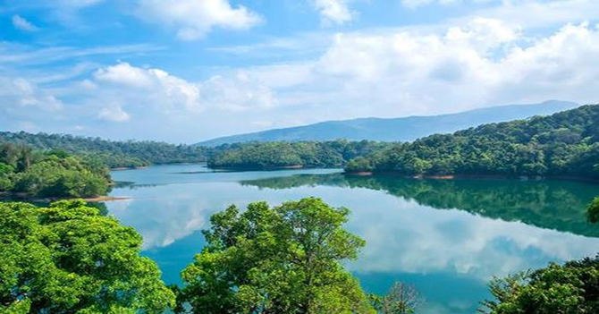
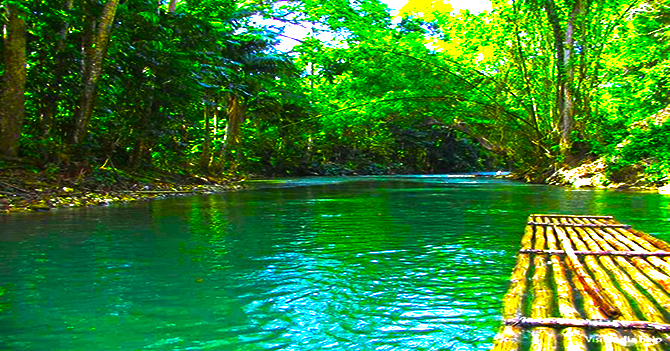
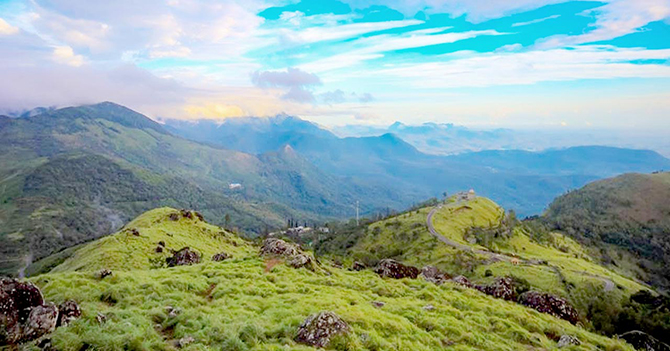
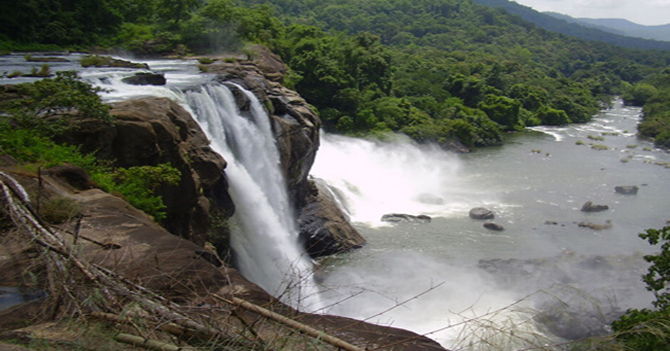

Kovalam is the small coastal town in the Southern Indian state of Kerala, south of Thiruvanathapuram. Just like Wayanad is for those people who loves green environment, climbing short hills, trekking and camping, Kovalam is for those beach lovers and loves salty sea food. Kovalam hold a different world in itself. You can indulge in activities like adventure sports, food, and photography. If you are visiting Kovalam, then make sure to made a trip to Lighthouse in Kovalam beach.
Spending night in beach and enjoying shore of the sea fills your mind with peace.
There are also lots of hotels near beach for staying if you don't want to spend night next to noisy beaches.
If you want to visit Kovalam and if you don't know how to get there, then you can reach Kovalam by three ways.
1. By Road.
If you want to enjoy road trip to Kovalam, then you can reach Kovalam by rented car or with your private car. Kovalam is also connected by other cities, namely, Bangalore, Chennai, Mangalore and Madurai by a good network of Buses.
2. By Rail.
The nearest railway station to Kovalam is Trivandrum Railway Station. It is located at a distance of 15 km from Kovalam. The Railway station is connected to all major cities of country.
After reaching Trivandrum Railway Station, You can hire taxi or bus from outside to reach Kovalam.
3. By Air.
The nearest airport to Kovalam is Trivandrum International Airport. It is located around 15 km from Kovalam. Trivandrum International Airport is connected to all major cities. You can hire taxi or buses to Kovalam after reaching Airport.
1. Neyyar Wildlife Sanctuary in Thiruvananthapuram.

Neyyar Wildlife Sanctuary is around 32 km from Thiruvananthapuram. It offers a huge range of exotic flora and fauna. Apart from flora and fauna, the sanctuary has a numerous trekking trails. It is a thrilling place to enjoy lion safari. You can enter this sanctuary in a forest department vehicle. This safari takes you to the lion park, elephant rehabilitation centre and crocodile farm. You will come across the wildlife of the forest.
You can also do Guided trekking there where you can enjoy boat cruising in Neyyar Dam.
Winter season is the best time to visit Neyyar Wildlife Sanctuary because it experiences rainfall most of the year.
2. Peppara Wildlife Sanctuary.

Peppara Wildlife Sanctuary is a tourist spot situated in the outskirts of Thiruvananthapuram. It covers an area of 75 sq.kms. Peppara Wildlife Sanctuary has evergreen forests, hills and valleys. Elephants, sambar deer, lion tailed macaque, Malabar Grey Hornbill can be found in this Sanctuary.
Nature lovers and wildlife enthusiasts will find this place atrractive.
3. Ponmudi Hill Station, Thiruvananthapuram.

If you want to make your weekend memorable, Ponmudi hill is the best place to visit.
Ponmudi Hill is 945m above the sea level and its mist filled mountains and tea estates makes the environment pleasant. Ponmudi is the home to many beautiful mountains, exotic flora and fauna.
You can also go on a long drive in winding paths of Ponmudi.
A lots of wooden and granite cottages are also available in Ponmudi for staying.
Tourists can also enjoy trekking and camping in Ponmudi Hills.
4. Thirumullavaram Beach, Kollam.
Thirumullavaram Beach is located 6km north of Kollam in the state of Kerala.
It is very quite beach and a beautiful picnic spot where you can also see the shore of the sea at low tide. It offers a peaceful experience to people who visits there.
Thirumullavaram Beach is a beuatiful destination with crystal clear water and golden sands with coconut and palm trees.
You will also find a Vishnu temple close to the beach.
5. Thusaragiri Waterfalls.

Thusaragiri waterfall is located in Kozhikode district in the Indian state of Kerala.
It is lying 50 km from Kozhikode. Thusaragiri waterfalls comprises three other waterfalls which can be reached through trekking.
Visiting time for this waterfall is from 8 AM to 4 PM.